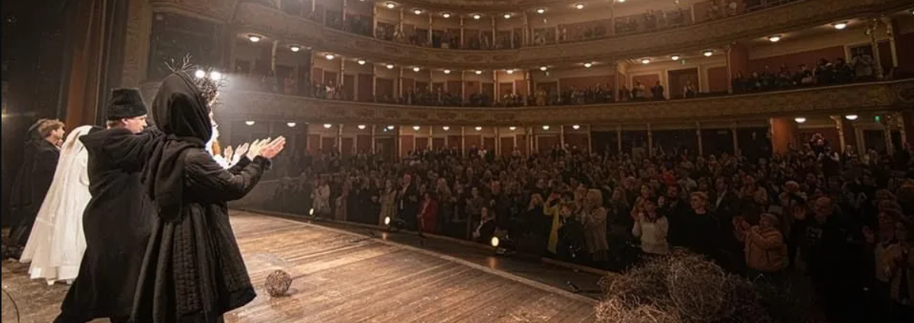
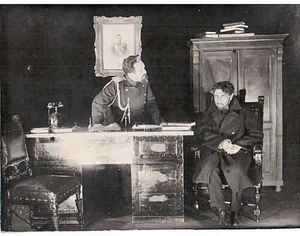
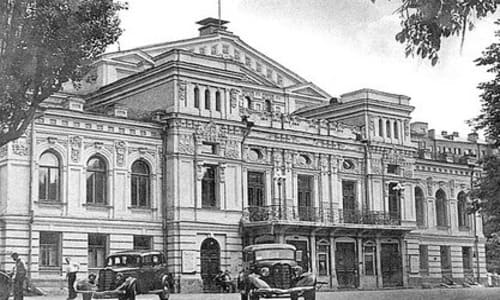
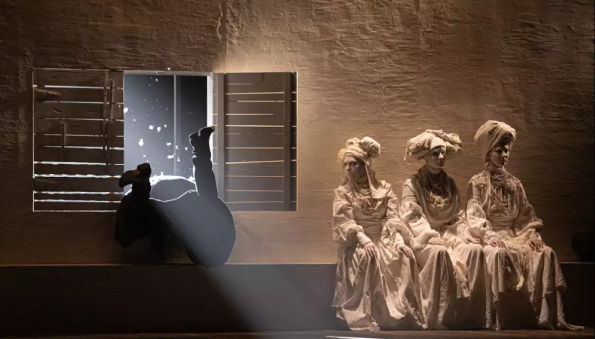
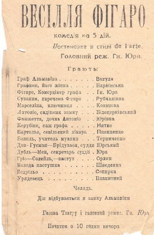

Національний академічний драматичний театр імені Івана Франка - це гордість України, що має статус національного.
Театр імені Івана Франка було засновано у Вінниці 1920 року частиною акторів Молодого театру на чолі з Гнатом Юром та акторами Нового Львівського театру на чолі з Амвросієм Бучмою. Метою було утворити театральну структуру під назвою «Новий Драматичний театр імені Івана Франка».
Відкриття театру відбулося 28 січня 1920 року виставою «Гріх» Володимира Винниченка, а протягом першого сезону театр відіграв 23 прем'єри.
До речі, у першому сезоні більшу частину репертуару складали п'єси В. Винниченка. В цей же час була підготовлена одна з нових постановок — «Весілля Фігаро» Бомарше, в якій Юра виступив як перекладач, режисер та виконавець головної ролі. Починаючи з прем'єри, що відбулась 27 серпня 1920 року, ця вистава тринадцять років не сходила з афіш франківців. Сценографія і музичне вирішення вистав традиційно були і залишаються сильною стороною творчості франківців — це роботи художників: М. Драка, В. Меллера, А. Петрицького, Д. Лідера, А. Александровича-Дочевського (головного художника театру), музика композиторів Н. Прусліна, Ю. Мейтуса, І. Шамо, І. Поклада, Л. Ревуцького, О. Білаша, М. Скорика та інших композиторів.

Сцена з вистави «Гріх» В. Винниченка, 1920 рік


Перші роки свого існування театр багато мандрував по містах і селах центральної України. Красномовним фактом є боротьби за існування стала виступ Гната Юра на прем'єрі «Весілля Фігаро» у Вінниці, де були присутні представники уряду УНР.
Починаючи з першої половини тридцятих років театр, як і ряд інших колективів, майже цілком переключився на пропагандистські п'єси радянської тематики. Серед 13-ти постановок, що вийшли у 1930–34 рр., була лише одна класична п'єса. Відчуваючи, що актори, театр можуть втратити те, що напрацьовувалось роками, Гнат Юра у 1933 році звертається до однієї з найулюбленіших постановок, яка рятувала театр в критичні часи, — «Весілля Фігаро», і сам виходить на сцену в ролі Фігаро.

Театр отримав статус академічного.
Трупа працювала в евакуації.
Роки художнього керівництва Сергія Данченка.
Указом Президента України театру надано статус Національного.
У театрі щорічно проводиться Міжнародний фестиваль жіночої моновистави «Марія».
Керівником театру став народний артист України Євген Нищук.